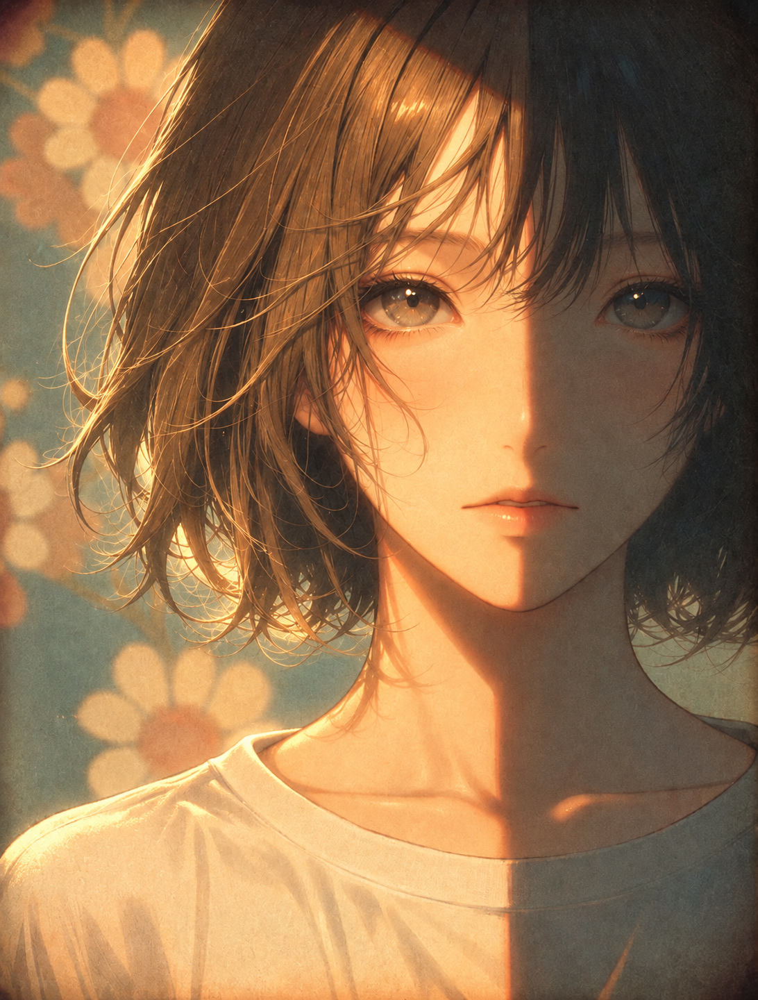
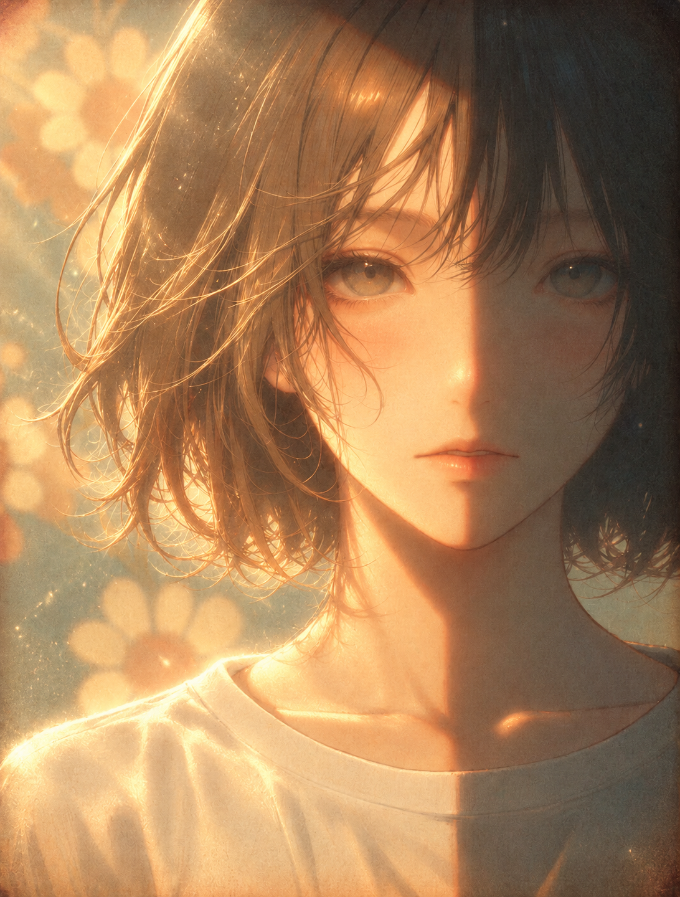
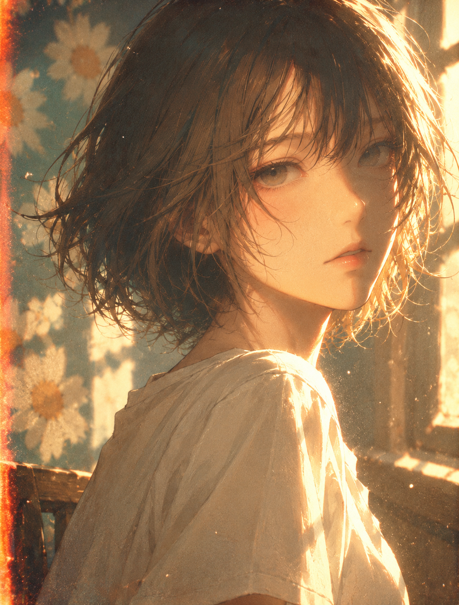

案例 03 · 窗边日光胸像


落在区间 · 第 1 轮。机位、姿态和整体布局基本一致，人物面部及头发细节略变，光影对比稍有增强。

落在区间 · 第 1 轮。机位、正面姿态和构图基本一致，主要是光照增强及头发、五官和衣领细节有轻微变化。

落在区间 · 第 3 轮。人物从正面近景改为侧身回望，构图、背景和逆光方向均明显变化。
落在区间 · 第 1 轮。第二张改为阳光温室画室中景，人物坐藤椅手捧速写本，周围有绿植和雏菊，呈3/4侧机位。